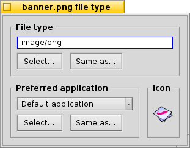

Other than Windows, Haiku doesn't rely on the 3-letter file extension for a file type (e.g. .txt, .jpg, .mp3). This method is only a last resort fallback. Haiku uses MIME types just like it's custom on the internet.
Setting the filetype of a specific file

You can change the type of a specific file, its icon and the associated application. Select the file and invoke the from the right-click context menu.
The File Type
This is a JPEG file, it's MIME string image/jpeg. Let's say you definitely know that it's not a JPEG but a GIF. You can change that either by entering the correct MIME string by hand or with one of the two buttons below the textbox:
| shows a hierarchical list of filetypes where you navigate to image | GIF Image. | ||
| opens a file dialog where you choose any file that already has the filetype you're looking for. |
The Preferred Application
This drop-down menu shows a list of all applications that can handle this particular filetype. From here you can choose which program should open this specific file when it's double-clicked. You could, for example, change a HTML file's preferred application from the browser to a text editor while you're working on it. Every other HTML file still opens in the browser, only this particular one starts in your text editor.
The is the one that's set globally for that filetype. If you don't find the program you want to associate with this file in the drop-down menu, you'll again find the buttons and which do the similar thing described under "The File Type" above.
The Icon
If you're wondering why the icon well on the top right is empty: Icons are normally inherited from the system default for that filetype. You can open the Filetype Add-On of a file that contains an icon and drag&drop it into your file's icon well. Or you double-click the icon well and create or edit your own icon. For more info on icons and how to create your own, see topic Icon-O-Matic.
Special settings for applications
If you invoke the Filetype Add-On on an executable (here: StyledEdit), you'll get a different dialog:

On top, you'll see, instead of a standardized MIME string, the unique application signature. With it, the system finds the program wherever it's installed.
Below it are several flags, controlling the app's behaviour:
| Only one instance of the app can be running per executable file. If you have two copies of that app, however, they can run side by side. | ||
| Many instances of the app can run simultaneously. | ||
| Really only one instance with that app's signature is allowed to run at a time. | ||
| Indicates the app doesn't respond to messages. | ||
| The app won't appear in Twitcher or the list of running apps of the Deskbar. |
Then there's the list of supported filetypes. You can add (and remove) filetypes if you think the application can handle them. As a consequence, the app will appear in the menu for preferred applications or Tracker's context menu when you right-click on a file of that type.
At the bottom are version and copyright information. Like the application signature, they are filled in by the app's author and shouldn't be altered.
Global settings with the Filetypes Preferences
The Filetypes preferences don't deal with individual files but with global settings of filetypes. You can change default icons and preferred applications or add, remove, or alter attributes of whole filetypes. You can even create your own filetype from scratch.
All filetypes and their configurations are stored in /boot/home/config/settings/beos_mime/. Before you start experimenting, it may be prudent to make a backup of that folder...
To learn more about the Filetypes preferences see the workshop: Filetypes, Attributes, Index and Queries.